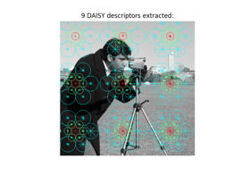
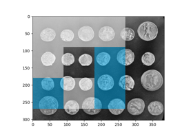
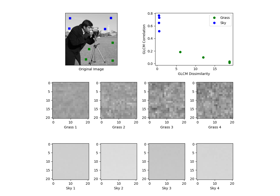
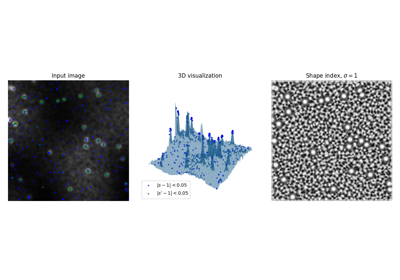

Source
SourceDetection of features and objects¶

Dense DAISY feature description
Dense DAISY feature description



Multi-Block Local Binary Pattern for texture classification
Multi-Block Local Binary Pattern for texture classification


Gabors / Primary Visual Cortex “Simple Cells” from an Image
Gabors / Primary Visual Cortex "Simple Cells" from an Image



GLCM Texture Features

Shape Index